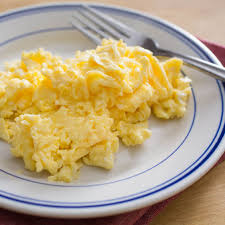

Best fluffy scramble egg

Description
After many attempts to make best fluffy scramble egg, I've finally found a good recipe. My friends and family love it, and it was my favorite breakfast.
Ingredients
- 2 eggs
- 2 tablespoons sliced cheddar cheese.
- 2 thin slices ham (optional)
- 1 teaspoon heavy whipping cream
- ½ teaspoon butter
Steps
- Whisk eggs together in a small bowl until smooth. Then mix in cheddar cheese, ham and heavy cream.
- Melt butter in a skillet over medium heat. Pour in the egg mixture; cook and stir until set but still moist, 3 to 5 minutes.
Nutrition Facts
Per Serving: 294 calories; protein 20.5g; carbohydrates 1.1g; fat 23g; cholesterol 412.8mg; sodium 516.4mg.